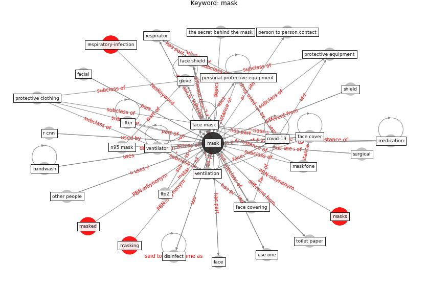

Keyword: mask
Keywords
- 3d print, accuracy, air pollute, airborne transmission, barrier, cdc, cdc s, cloth, contact lense, coronavirus, covering, covid 19 pandemic in mainland china, covid-19, cross ventilation, culture, customer, deep learning, disinfect, exposure time, eye mask, fabric, face, face cover, face covering, face mask, face mask detection, face shield, facial, ffp2, ffp3, filter, filter mask, functional, gather less, gauze, gel hydro alcoholic, glove, group session, handwash, infection, infection rate, influenza, influenza virus transmission, mask, maskfone, medication, medicine, mouth cover, n95 mask, new rule, other people, p100 filter, person to person contact, personal protective equipment, pharmacy, ppe doff, ppe like glove, precautionary measure, preventive measure, protection, protection gear, protective clothing, protective equipment, protective suit, r cnn, respirator, respiratory mask, respiratory protection, reusable mask, safety criterion, sample, secret, shield, shopper, single sided ventilation, snood, speech transcribe, staff, standard steriliser, steriliser, surgical, taxi driver, the secret behind the mask, the sense of wear it, toilet paper, use one, ven tilation, ventilation, ventilator, wash hand regularly, wear, wear a mask, wear mask, with psynetmasks, with tamadramasks, without mask, work time, workplace outbreak, world, figure
Concepts

Mapping
Neighbours
Closest articles
- The ventilation of buildings and other mitigating measures for COVID-19: a focus on wintertime - LINK
- Supporting Technologies for COVID-19 Prevention: Systemized Review - LINK
- An Automated System to Limit COVID-19 Using Facial Mask Detection in Smart City Network - LINK
- COVID-19 misinformation: Accuracy of articles about coronavirus prevention mostly shared on social media - LINK
- How COVID-19 Could Accelerate the Adoption of New Retail Technologies and Enhance the (E-)Servicescape - LINK
- Physical interventions to interrupt or reduce the spread of respiratory viruses: systematic review - LINK
- COVID-19 Prevention and Control Measures in Workplace Settings: A Rapid Review and Meta-Analysis - LINK
- COVID-19 Pandemic: Prevention and Protection Measures to Be Adopted at the Workplace - LINK
- A critical review of heating, ventilation, and air conditioning (HVAC) systems within the context of a global SARS-CoV-2 epidemic - LINK
- Analysis of COVID-19 Concerns Raised by the Construction Workforce and Development of Mitigation Practices - LINK
Closest BPs